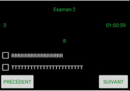

Comment remplir un questionnaire ?
Prérequis
Pour accéder au remplissage du questionnaire il faut au préalable en avoir sélectionner un.
Composition

Le remplissage du questionnaire affiche un certain nombre d'éléments :
- Nom du QCM
- intitulé de la question
- Le numéro de la question actuelle
- Le nombre de question total
- Un compte à rebours si le questionnaire dispose d'un temps limite
- Une liste de réponse avec une case à cocher pour sélectionner ainsi que sa valeur
- Un bouton "suivant" pour passer à la question suivante
- Un bouton précédent pour retourner à la question précédente
Pour remplir le questionnaire rien de plus simple, à chaque question cocher les cases des réponses que vous souhaiter et naviguer vers les questions suivantes.
Remplir un questionnaire
Créé avec HelpNDoc Personal Edition: Créer des livres électroniques EPub facilement